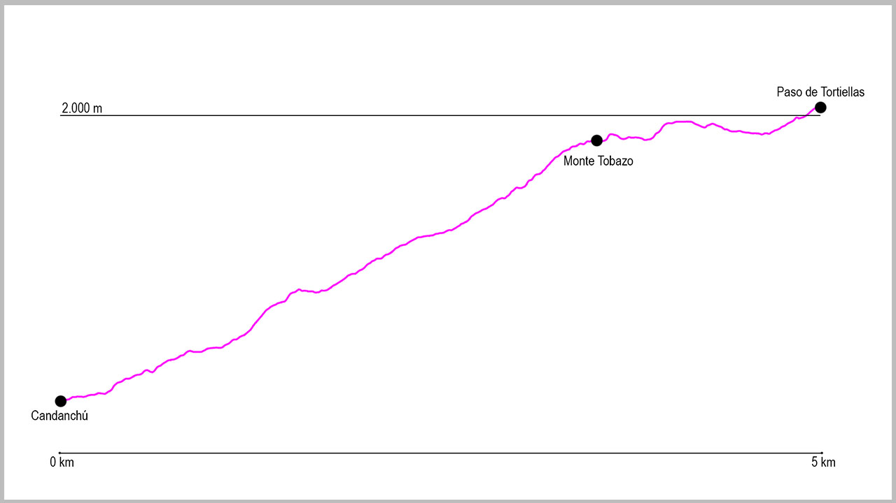

Comenzaremos la actividad en el parking de Pista Grande de Candanchú. Junto a las taquillas de la estación de esquí, comienza una pista que seguiremos durante 750 metros, para en la bifurcación tomar la que continúa a nuestra izquierda.
Poco después del cruce, la pista empieza a ascender de forma muy progresiva, recuperando poco a poco nuestra latitud respecto a Candanchú. La pista tiene una longitud de 3 kilómetros hasta que llegamos a Tobazo, pero la subida dista mucho de ser una mera pista de transición de un lugar a otro, ya que a lo largo de la misma tendremos alguna rampa bastante empinada.
Al llegar a la parte más elevada de nuestro recorrido veremos unas impresionantes vistas del pico Aspe y de la Garganta de Borau, momento en el cual nos podremos salir un poco de la pista a nuestra izquierda para subir a la propiamente cima del Monte Tobazo.
Después de una posible parada, proseguiremos por la pista que continúa dirección oeste en dirección hacia la Tuca. Una vez divisemos Tortiellas Alto tomaremos la bifurcación a nuestra derecha, la cual nos llevará hasta el reenvió de la silla de Tortiellas y poco después, y tras una pequeña bajada al paso de Tortiellas.
